Note: The equations in this tutorial are best viewed through the HTML version as the 'playshow' function does not convert them to LaTeX.
Gradient information serves several purposes. It can relate the structure of objects in an image, identify features of interest for recognition/classification directly or provide the basis of further processing for various computer vision tasks. For example, "edges," noted by regions of high gradient magnitude, are central to the task of identifying defects in circuitry. A sample "edge-detected" image using the 'Image Processing Toolbox' for MATLAB is shown where locations marked by white are those points that are indicative of high gradient magnitude, which can also be described as regions of high pixel contrast.
img = imread('circuit.tif'); subplot(121); imshow(img); title('Original Image'); subplot(122); edgeImg = edge(img, 'sobel'); %----- from Image Proc. Toolbox imshow(edgeImg); title('Gradient Magnitude');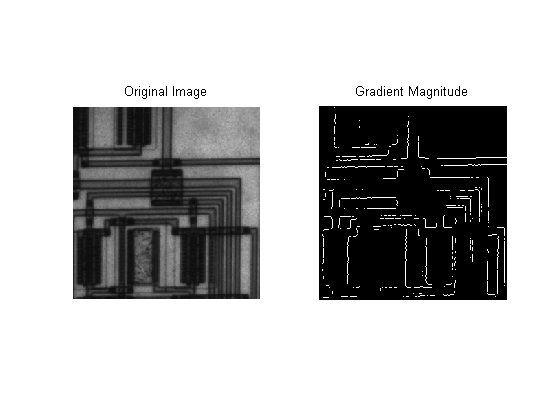
When representing gradient information derived from an image, there are several options from which to choose. One such choice is the "directional derivative" that provides a vector representation. Its magnitude reflects the maximum change in pixel values while the phase is directed along the orientation corresponding to the maximum change. These two components are calculated as per Equations (1) and (2) respectively:
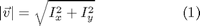
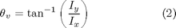
where Ix denotes the partial derivative of image I along the x-axis. An example is shown against a horizontal step-edge image with the directional derivative overlaid with a red-arrow.
Original Input
img = imread('stepEdge.pgm'); img = double(img); [rows, cols] = size(img); subplot(121); imagesc(img); %-------- visual axis xy; axis tight; axis square; colormap gray; title('Original Image'); maskSize = max([rows, cols]); midpt = ceil(maskSize/2); DoG = difference_of_gaussian_kernels(maskSize); Ix = conv2(img, DoG.Gx,'same'); Iy = conv2(img, DoG.Gy,'same'); DD_mag = sqrt(Ix.^2 + Iy.^2); DD_mag = DD_mag./255; %---------- grayscale [0,255] --> [0,1] DD_phase = atan2(Iy, Ix); [U,V] = pol2cart(DD_phase, DD_mag); cU = U(midpt, midpt); cV = V(midpt, midpt); cDD_mag = DD_mag(midpt, midpt); cDD_phase = DD_phase(midpt, midpt)*(180/pi); %---- convert to degrees subplot(122); imagesc(img); %-------- visual axis xy; axis tight; axis square; colormap gray; hold on; quiver(midpt, midpt, cU, cV, midpt, 'r', 'LineWidth', 5, 'MaxHeadSize', 5); tmsg = sprintf('Directional Derivative (Mag=%.2f, Phase=%.0f)', cDD_mag, cDD_phase); title(tmsg);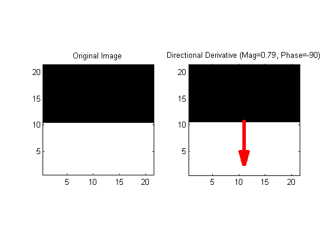
The direction of the gradient in this case is based purely on the ordering of the pixel values. i.e. it points from black to white. If these colors were reversed, the gradient magnitude would remain the same; however, the direction would then be reversed such that it again pointed FROM the black TO the white region. In applications where the gradient is used to denote contours within the scene, such as object outlines, the polarity is of little use. Nevertheless, this orientation reveals the "normal" to the contour in question. "Orientation," in this context, implies PI-periodic behavior, as in the term "horizontal orientation." i.e. orientation ranges between [0,pi). To reflect this periodicity, the directional derivative, when applied to the extraction of gradient-based structures, should also have an arrow pointed in the opposite direction.
quiver(midpt, midpt, -cU, -cV, midpt, 'r', 'LineWidth', 5, 'MaxHeadSize', 5); title('Directional Derivative (Reflecting Orientation)');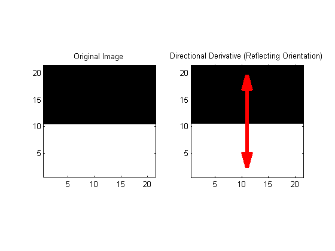
Although the directional derivative is relatively computational inexpensive, it does possess a weakness. This is best illustrated with an example. Given an isotropic structure, where there is no preferred direction of gradient, the directional derivative formula results in a zero magnitude. An example of such an isotropic structure is a black circle on a white background. There is clearly gradient information; however, since there is no preferred phase, it zeros itself out.
% Isotropic Case subplot(121); imgI = imread('circle.pgm'); imgI = double(imgI); imagesc(imgI); %-------- visual axis xy; axis tight; axis square; colormap gray; set(gca,'XTick',[]); set(gca,'YTick',[]); title('Isotropic Case'); % Uniform Color Case subplot(122); imgU = imread('oneColor.pgm'); imgU = double(imgU); [rows, cols] = size(imgU); hold off; imagesc(imgU); %-------- visual hold on; axis xy; axis tight; axis square; colormap gray; set(gca,'XTick',[]); set(gca,'YTick',[]); title('Uniform Color Case');

There are several ways to calculate the partial derivatives of the image. For example, simple differencing between neighboring pixels one option, although the gradient will only be representative of a 2x1 region of interest. The 'Difference of Gaussians' (DoG) is a common technique that convolves a specialized mask to calculate the partial derivative value over a larger region of interest.
% Isotropic Case [rows, cols] = size(imgI); maskSize = max([rows, cols]); midpt = ceil(maskSize/2); DoG = difference_of_gaussian_kernels(maskSize); Ix = conv2(imgI, DoG.Gx,'same'); Iy = conv2(imgI, DoG.Gy,'same'); DD_mag = sqrt(Ix.^2 + Iy.^2); DD_mag = DD_mag./255; %---------- grayscale [0,255] --> [0,1] DD_phase = atan2(Iy, Ix); cDD_magI = DD_mag(midpt, midpt); cDD_phaseI = DD_phase(midpt, midpt)*(180/pi); %---- convert to degrees IxI = Ix(midpt, midpt); % --------- used in structure tensor code IyI = Iy(midpt, midpt);
The same output is reached if the original input is a uniformly colored region. Again, the directional derivative magnitude is zero as there is no gradient information with which to calculate. What is needed is a representation capable of discerning between these two examples that properly reflects the presence of gradient information in the first case, but none in the second.
% Uniform Color Case [rows, cols] = size(imgU); maskSize = max([rows, cols]); midpt = ceil(maskSize/2); DoG = difference_of_gaussian_kernels(maskSize); Ix = conv2(imgU, DoG.Gx,'same'); Iy = conv2(imgU, DoG.Gy,'same'); DD_mag = sqrt(Ix.^2 + Iy.^2); DD_mag = DD_mag./255; %---------- grayscale [0,255] --> [0,1] DD_phase = atan2(Iy, Ix); [U,V] = pol2cart(DD_phase, DD_mag); cU = U(midpt, midpt); %---------- prefix 'c' for center of mask cV = V(midpt, midpt); cDD_magU = DD_mag(midpt, midpt); cDD_phaseU = DD_phase(midpt, midpt)*(180/pi); %---- convert to degrees IxU = Ix(midpt, midpt); % --------- used in structure tensor code IyU = Iy(midpt, midpt); tmsg = sprintf('Isotropic Case: Directional Derivative Magnitude=%f', cDD_magI); disp(tmsg); tmsg = sprintf('Uniform Color Case: Directional Derivative Magnitude=%f', cDD_magU); disp(tmsg);
Isotropic Case: Directional Derivative Magnitude=0.000000 Uniform Color Case: Directional Derivative Magnitude=0.000000
A different method of representing gradient information is by using the "structure tensor." It also makes use of the Ix and Iy values, however, in a matrix form. The term "tensor" refers to a representation of an array of data. The "rank" of a tensor denotes the number of indices needed to describe it. For example, a scalar value 'X' is a single value, hence requires no indices. This means that a scalar is a tensor of rank zero. A vector, often represented as Vi = {V1,V2,..Vn} uses a single index = i. This implies that a vector is a tensor of rank one. A two-dimensional matrix Mij is a tensor of rank two and so and so forth.
The structure tensor matrix is formed as per the following equation:
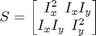
Eigen-decomposition is then applied to the structure tensor matrix 'S' to form the eigenvalues and eigenvectors (L1,L2) and (e1,e2) respectively. These new gradient features allow a more precise description of the local gradient characteristics. For example, e1 is a unit vector directed normal to the gradient edge while the e2 is tangent. The eigenvalues indicate the underlying certainty of the gradient structure along their associated eigenvector directions. As noted by several researchers, the "coherence" is obtained as a function of the eigen- values [Jahne 1993, Medioni et al. 2000, Tschumperle and Deriche 2002]. This value is capable of distinguishing between the isotropic and uniform cases. The coherence is calculated as per the following equation:
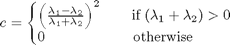
subplot(1,1,1);
cla;
axis off;
MI = [IxI*IxI, IxI*IyI;...
IxI*IyI, IyI*IyI]; %--- structure tensor for 'I'sotropic case
MU = [IxU*IxU, IxU*IyU;...
IxU*IyU, IyU*IyU]; %--- structure tensor for 'U'niform case
[e1,e2,l1,l2] = eigen_decomposition(MI);
if (l1+l2) > 0
coherenceI = ((l1-l2)/(l1+l2))^2;
else
coherenceI = 0;
end
[e1,e2,l1,l2] = eigen_decomposition(MU);
if (l1+l2) > 0
coherenceU = ((l1-l2)/(l1+l2))^2;
else
coherenceU = 0;
end
disp('Note how the coherence measure is different for each case');
tmsg = sprintf('Isotropic case coherence:%f', coherenceI);
disp(tmsg);
tmsg = sprintf('Uniform color case coherence:%f', coherenceU);
disp(tmsg);
Note how the coherence measure is different for each case Isotropic case coherence:0.000000 Uniform color case coherence:1.000000
It is interesting to note that if a different method is used to obtain the partial derivative information, for example using Horn's approach where the average, absolute pixel difference is used, the coherence for the isotropic region is one while the uniform case is zero: opposite of the values obtained above. What is key is that no matter the partial derivative method used, the coherence, a feature of the structure tensor, is able to distinguish between the two cases. Many corner detection and salient point location algorithms [Forstner 1986, Harris and Stevens 1988, Rohr 1997, Triggs 2004] make use of the eigenvalues that are derived from the structure tensor to quantify the certainty in the measurements [Kenney et al. 2005].
There are other advantages to using the structure tensor representation as well. For example, local shifting of edge locations in minimized when applying a Gaussian smoothing operator element-by-element to the structure tensor [Nicolescu and Medioni, 2003]. Furthermore, the cancellations of opposing gradient polarity directions are prevented when structure tensors are summed [Brox et al. 2004].
This form of gradient representation serves especially well in inferring structure from sparse and noisy data [Medioni et al. 2000]. The structure tensor is also applicable to higher dimensional data. For example, given three-dimensional data, such as that from a spatio-temporal volume (x,y,time) or medical imaging input (x,y,z), the structure tensor is represented as follows:
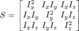
The eigen-decomposition of the tensor of rank two results in (L1,L2,L3) and (e1,e2,e3) for the eigenvalues and eigenvectors respectively. The interpretation of these components can be visualized as 3D ellipses where the radii are equal to the eigenvalues in descending order and directed along their corresponding eigenvectors.
visualize_3D_cases_of_structure_tensor_in_ellipse_form('gen_st'); title('Elliptical Representation of Structure Tensor');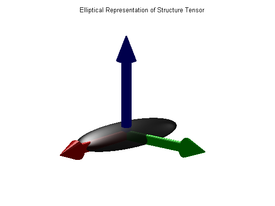
The differences between the eigenvalues indicate underlying structure as well. For example, if the value of (L1-L2)>>0, this depicts a "surfel," surface element, where e1 is the normal to the surface [Nicolescu and Medioni 2003].
cla;
visualize_3D_cases_of_structure_tensor_in_ellipse_form('surfel');
title('Surfel: normal to surface element');
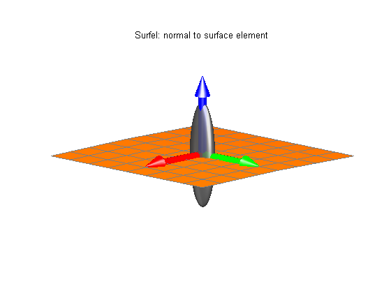 A local curve element, "curvel," is identified as (L2-L3)>>0 where e3 is tangent to the curve.
cla;
visualize_3D_cases_of_structure_tensor_in_ellipse_form('curvel');
title('Curvel: tangent to curve element');
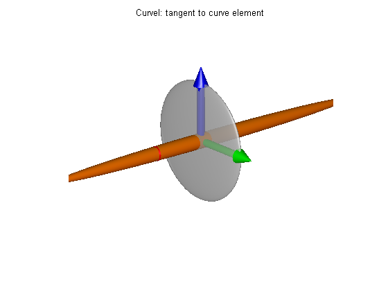 If L3>>0 then there is presence of an isotropic behavior, similar to a spherical structure or uniform region.
cla;
visualize_3D_cases_of_structure_tensor_in_ellipse_form('ball');
title('Isotropic structure tensor');
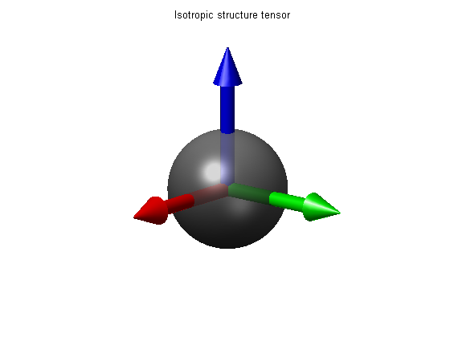 Applied against actual data % Step plane case:
cla;
stepPlaneData = three_dimensional_test_cases('step_plane');
title('Step-Plane');
visualize_3D_data(stepPlaneData);
view(30,30);
axis on;
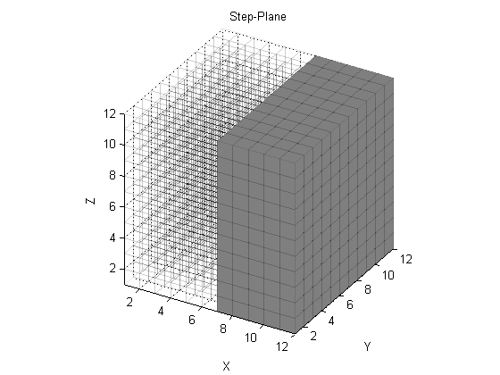 Associated structure tensor in elliptical form:
[Ix,Iy,Iz] = partial_derivative_3D(stepPlaneData);
ST_sp = partial_derivative_to_structure_tensor_form([Ix, Iy, Iz]);
hold off;
structure_tensor_plot(ST_sp);
view(30,30);
title('Structure Tensor Form');
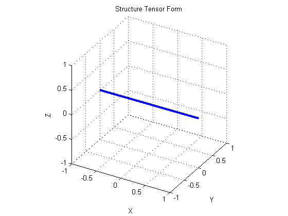 Curve case:
cla;
lineData = three_dimensional_test_cases('line3d');
title('Curve');
visualize_3D_data(lineData);
view(30,30);
axis on;
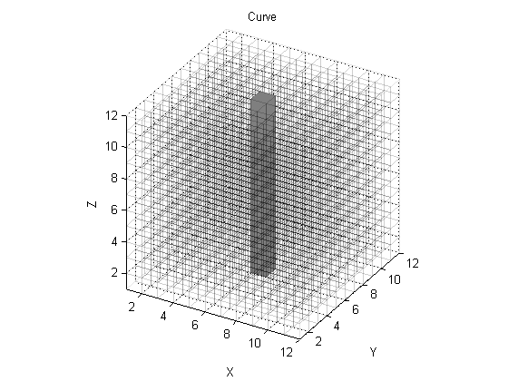 Associated structure tensor in elliptical form:
[Ix,Iy,Iz] = partial_derivative_3D(lineData);
ST_line = partial_derivative_to_structure_tensor_form([Ix, Iy, Iz]);
hold off;
structure_tensor_plot(ST_line);
view(30,30);
title('Structure Tensor Form');
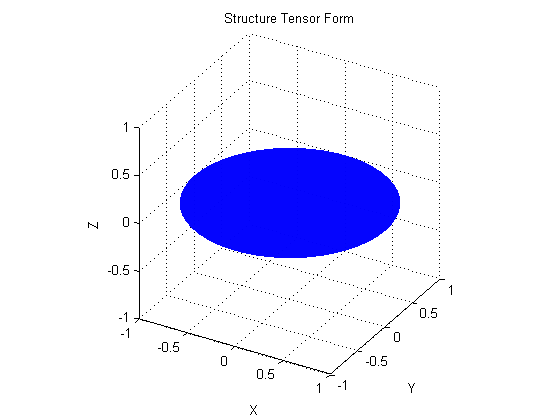 % Sphere case:
cla;
title('Sphere');
sphereData = three_dimensional_test_cases('sphere');
visualize_3D_data(sphereData);
view(30,30);
axis on;
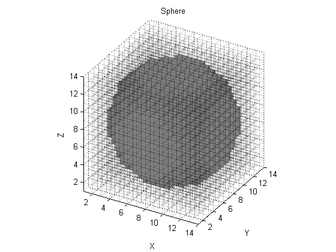 Associated structure tensor in elliptical form:
hold off;
[Ix,Iy,Iz] = partial_derivative_3D(sphereData);
ST_sphere = partial_derivative_to_structure_tensor_form([Ix, Iy, Iz]);
structure_tensor_plot(ST_sphere);
view(30,30);
camlight left;
lighting phong;
title('Structure Tensor Form');
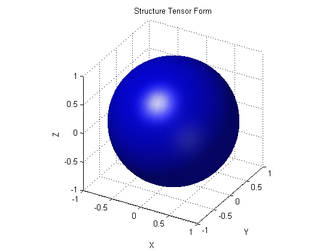 Another desirable property of the structure tensor form is that the tensor addition equates itself to the adding of the elliptical forms. For example, if the structure tensors for the sphere case and step-edge case are added, the resulting structure tensor is an elongated ellipsed along the direction of the step-edge case.
subplot(1,1,1);
cla;
tensorAddition = ST_sphere + ST_sp;
structure_tensor_plot(tensorAddition);
view(30,30);
camlight left;
lighting phong;
title('Tensor Addition of Sphere and Step-edge Case');
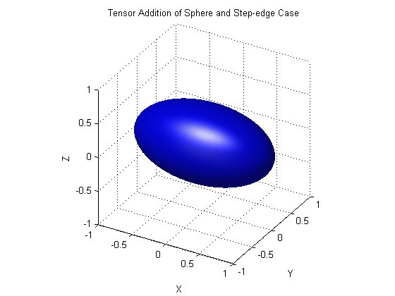 cla; %----- needed to facilitate 'publish.m' % % T. Brox, J. Weickert, B. Burgeth and P. Mrazek, "Nonlinear Structure Tensors," in % Universitat des Saarlandes, Tech. Report#113, pp.1-32, 2004. % % W. Forstner, "A Feature Based Correspondence Algorithm for Image Processing," % International Archives of Photogrammetry and Remote Sensing, vol.26, pp.150- % 166, 1986. % % C. Harris and M. Stephens, "A Combined Corner and Edge Detector," in Proc. of % the 4th ALVEY Vision Conference, pp.147-151, 1988. % % B. Jahne, "Spatio-Temporal Image Processing: Theory and Scientific Applications." % Berlin: Springer-Verlag, vol.751, 1993. % % C. Kenney, M. Zuliani and B. Manjunath, "An Axiomatic Approach to Corner % Detection," in Proc. IEEE Computer Vision and Pattern Recognition, pp.191-197, % 2005. % % G. Medioni, M. Lee and C. Tang, "A Computational Framework for Feature Extraction % and Segmentation," Elsevier Science, Mar. 2000. % % M. Nicolescu and G. Medioni, "Motion Segmentation with Accurate Boundaries - % A Tensor Voting Approach," in Proc. IEEE Computer Vision and Pattern Recognition % vol.1, pp.382-389, 2003. % % K. Rohr, "On 3D Differential Operators for Detecting Point Landmarks," Image % and Vision Computing, vol.15, no.3, pp.219-233, 1997. % % B. Triggs, "Detecting Keypoints with Stable Position, Orientation, and Scale % under Illumination Changes," in Proc. European Conference on Computer Vision, % vol.4, pp.100-113, 2004. % % D. Tschumperle and Deriche, "Diffusion PDE's on Vector-Valued Images," IEEE Signal % Processing Magazine, pp.16-25, Sept. 2002. % %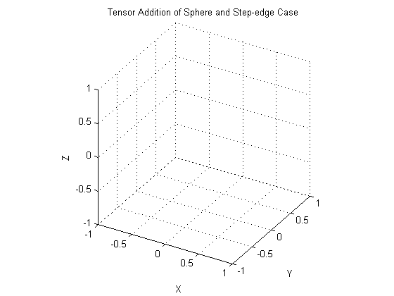
Shawn Arseneau
September 21, 2006